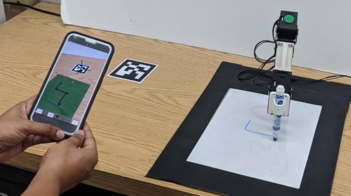
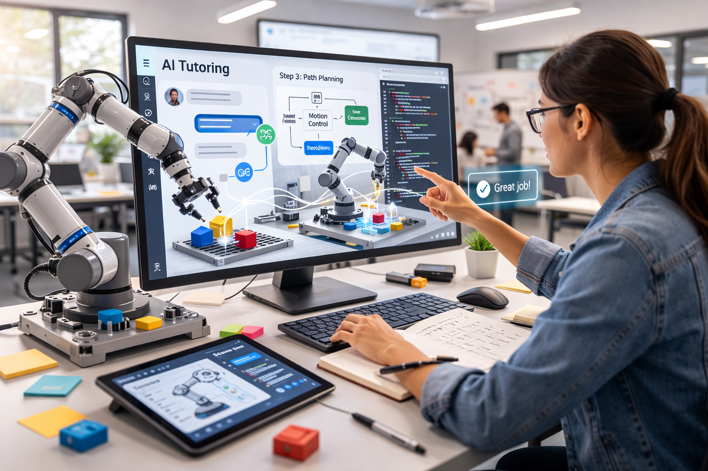

The Advanced Robotics and Technology (ART) Research Lab develops intelligent robotic systems and AI/XR-enabled learning technologies, advancing human-centered engineering through interdisciplinary research and experiential education.

Designing safe, intuitive, and intelligent collaboration between humans and robots. Topics include shared autonomy, trust and transparency, multimodal interaction, and human-aware motion planning for real-world deployments.

AR/VR/MR environments for engineering visualization, robotics training, and immersive experiential learning—connecting interactive 3D content with real systems and data.
Instructor-in-the-loop AI tutoring, adaptive scaffolding, and learning analytics that support conceptual understanding and project-based engineering learning.